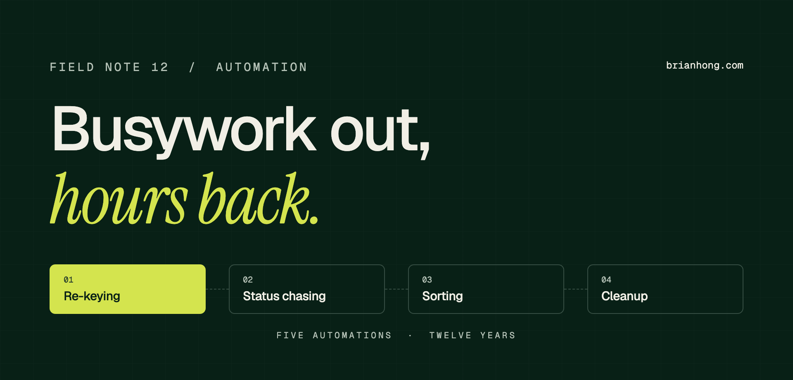

5 Salesforce automations that saved the most hours in my career
None of them were clever. Each one took a job people were doing by hand, every day, and made it stop.

I’ve been building on Salesforce since 2014, in orgs from 200 users to more than 60,000. I’ve shipped a lot of automation in that time. Most of it saved a few minutes here and there. Five projects saved real hours, the kind a team notices on a Monday morning.
The Salesforce automations that saved the most hours in my career were application intake with self-service status, a lead handoff into Salesloft cadences, spam case blocking with queue routing, a Closed Won gate tied to the PO and order form, and structured request intake. Measured results ran from 20% faster turnaround to 95% less manual data entry.
Here’s each one: the busywork it replaced, what I built, the number, and the part you can copy this week.
The five automations at a glance
Ranked by how much of the team’s week they gave back, in my judgment. The percentages measure different things, so read them as the result of each project, not a league table.
| # | Automation | Where | What it replaced | Measured result |
|---|---|---|---|---|
| 01 | Application intake with self-service status | Nonprofit scholarship program (pro bono) | Re-keying applications, answering status emails | −95% manual entry, −90% status emails |
| 02 | Lead handoff into Salesloft cadences | Ed tech sales team (500 users) | Booking meetings by hand, re-keying leads into Salesloft | −40% manual entry |
| 03 | Spam case blocking and queue routing | Ed tech support team (Service Cloud) | Agents sorting junk cases and duplicate queues | Critical cases 25% faster, CSAT +25% |
| 04 | Closed Won gate tied to the PO and order form | Ed tech and supply chain (CPQ) | Chasing contract documents after deals closed | 100% Closed Won audit alignment |
| 05 | Structured request intake flows | Salesforce internal IT (60,000+ users) | Back-and-forth to get the details of a request | 20% faster turnaround |
1. Application intake with self-service status: 95% less manual entry
This is the biggest one, and it was pro bono. A nonprofit scholarship program tracked applications, receipts, and donations by hand. I led the engagement for three years.
- The busywork Staff re-keyed every application into the CRM, sometimes for entire days, then answered “did you get my application?” emails for the rest of the week.
- What I built An automated application workflow, an integration with the donation platform, and self-service forms where applicants check status and staff approve receipts.
- The result Manual data entry dropped 95%. Inbound status emails dropped 90%. Leadership got a live view of fundraising for the first time.
- Steal this If people email you to ask where their thing is, show them the status instead. The 90% drop in status emails came from the self-service forms, not from the data entry work.
2. Lead handoff into Salesloft cadences: 40% less manual entry
At an ed tech company, reps were booking meetings by hand and re-keying lead data into Salesloft after the fact. Every lead got typed twice.
- The busywork Copying lead details from Salesforce into Salesloft, picking a cadence, booking the meeting somewhere else, then logging it back on the record.
- What I built Lead-to-Opportunity automation: leads and campaign members go straight into the right Salesloft cadence, reps book meetings from the record, and Slack alerts fire on MQL assignment and stage changes.
- The result Manual entry dropped 40% across the sales team. Nobody noticed a launch. The re-typing just stopped.
- Steal this Find every place a rep types the same thing into two systems. That’s your integration backlog, already ranked by annoyance.
The full build is in my lead routing and speed-to-lead playbook.
“It’s the kind of project that’s invisible when it works. Nobody notices the busywork that stopped happening.”
3. Spam case blocking and queue routing: critical cases 25% faster
Support agents were the spam filter. Junk cases landed in the same queues as real customers, and duplicate queues slowed the critical ones down.
- The busywork Opening, reading, and closing spam cases one at a time. Hunting through duplicate queues for the ticket that was actually urgent. Copying product escalations into Jira.
- What I built Automation that flags and blocks spam cases before an agent sees them, consolidated queues with rebuilt escalation rules, and a Celigo sync that sends escalations to Jira.
- The result Critical cases were resolved 25% faster and CSAT rose 25%.
- Steal this Before you automate the response, automate the sorting. Count how many cases get closed with no reply. That number is the size of the prize.
4. A Closed Won gate tied to the PO and order form: 100% audit alignment
This one doesn’t save clicks. It saves the cleanup. Deals were closing without consistent approvals, and Closed Won records didn’t always match their POs and order forms.
- The busywork Finance and ops reconciling closed deals against contract documents after the fact, and reps getting pulled back into deals they thought were done.
- What I built CPQ bundles, product rules, and approval workflows, plus validation that won’t let an opportunity reach Closed Won without its PO and order form attached.
- The result 100% of Closed Won deals lined up with their contract documents at audit. I didn’t track the hours on this one, so I won’t make a number up.
- Steal this The cheapest time to fix a record is before it’s saved. Put the rule at the stage change, where the rep still has the paperwork open.
I wrote up the whole method in auditing quote-to-cash in Salesforce.
5. Structured request intake: 20% faster turnaround
My first seven years were on Salesforce’s own internal IT team. The fix I’d repeat anywhere came from there: get the details of a request up front, before a person has to ask.
- The busywork Reading a vague request, writing back to ask what was actually needed, waiting, and then starting the work a day or two later.
- What I built Intake flows that ask for the needed details up front and send the request to the right place the first time.
- The result Turnaround time dropped 20%. It’s the smallest percentage on this list, at the largest scale, which is why it makes the top five.
- Steal this Look at your last twenty requests and write down the first question you asked on each. Those questions are your intake form.
Intake is also the first step of the loop I use when standing up a Center of Excellence.
What the five have in common
Look at the list again. No AI, no custom code worth bragging about, nothing a conference talk would be built around. Every one of them removed one of four kinds of busywork:
- Re-keying The same data typed into two places. Automations 1 and 2. This is where the biggest numbers live.
- Status chasing People asking where something is, and people answering them. Automation 1.
- Sorting A human deciding what a record is and where it goes before any real work starts. Automations 3 and 5.
- Cleanup Fixing records after the fact because nothing stopped the bad save. Automation 4.
They also had a named owner on the business side, a baseline taken before the build, and a process people had already agreed on. Automating a process nobody agrees on just produces the argument faster.
How to find your own top five
To find the Salesforce automations that will save the most time in your org, measure the manual work before you open Flow Builder. Volume times minutes is the whole formula.
- 1. Sit with the team Watch three people do their job for an hour each. Write down every copy-paste, every “let me check on that,” and every spreadsheet.
- 2. Count and time it For each step, get the weekly volume from a report and time a few real examples. Run the formula.
- 3. Check the rule Can you write the step as if-this-then-that? If two people would do it differently, fix the process first.
- 4. Build the top one One automation, in Flow, with a fault path and an owner. Ship it, then measure what’s left against the baseline.
The 43 hours is an example to show the math, not a result from one of my projects. If your org still runs on Workflow Rules and Process Builder, migrate to Flow before adding more. Salesforce’s own record-triggered automation guide is the best reference for which tool fits which job.
What I’d skip
Some automation costs more hours than it saves. These are the ones I talk teams out of:
- Rare processes Something that happens four times a year doesn’t need a flow. It needs a checklist.
- Alerts for everything If every field change pings Slack, people mute the channel. Alert on the few events someone has to act on.
- Automation on bad data A flow that reads a field nobody fills in will do the wrong thing very quickly. Fix the data stewardship problem first.
- A second automation on the same field Two things writing to one field is how orgs end up needing a tech debt audit. Extend the flow that’s there.
Frequently asked questions
What Salesforce automations save the most time?
The Salesforce automations that save the most time remove re-keying, status chasing, manual sorting, and after-the-fact cleanup. In my work those were application intake with self-service status, a lead handoff into Salesloft cadences, spam case blocking with queue routing, a Closed Won gate tied to the PO and order form, and structured request intake.
How much time can Salesforce automation save?
It depends on how manual the process was. Across the five projects in this note, measured results ran from 20% faster turnaround on request intake to 95% less manual data entry on a scholarship application process. Processes with heavy re-keying between systems save the most.
What should I automate first in Salesforce?
Automate the step with the most repetitions and the clearest rules first. Multiply how often the step happens each week by the minutes it takes, then start with the biggest number that follows a rule you can write as if-this-then-that. Data entry between systems, lead assignment, and status notifications usually top the list.
How do I measure the hours a Salesforce automation saves?
Take a baseline before you build. Count how many times the manual step happens per week and time a few real examples. After launch, count what’s left: records still entered by hand, status emails still arriving, cases still sorted manually. Report the difference as hours per month and keep the baseline report.
Should I build these automations in Flow or Apex?
Build them in Flow unless you hit a real limit. Record-triggered flows, screen flows, and scheduled flows cover everything in this note. Salesforce ended support for Workflow Rules and Process Builder on December 31, 2025, so new automation belongs in Flow. Use Apex for very high volumes or logic Flow can’t express cleanly.
Can Agentforce replace Flow automation?
No. Agentforce agents can run flows as actions, so they sit on top of rule-based automation and don’t replace it. Use a flow when the rule is fixed and the same every time. Use an agent when the request arrives in plain language and something has to decide which action to run. Clean data and working flows come first.